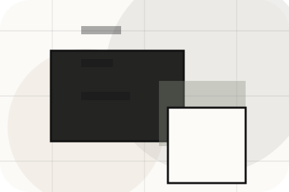
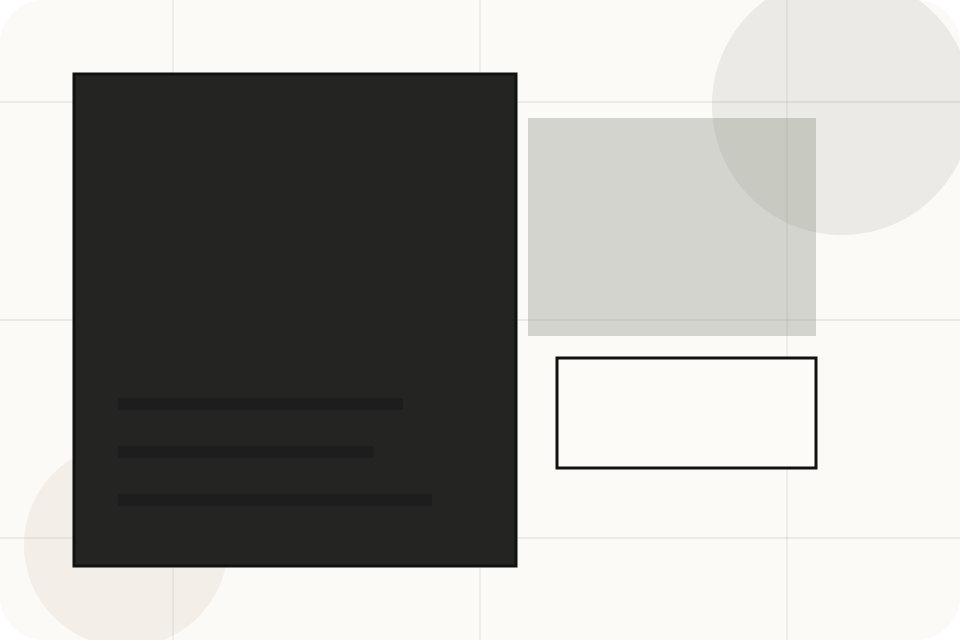
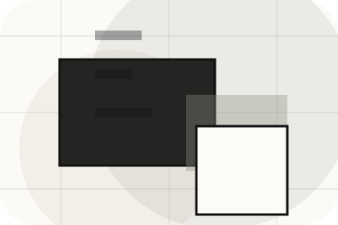
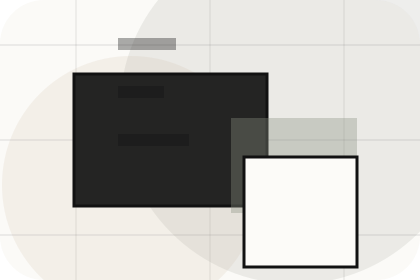
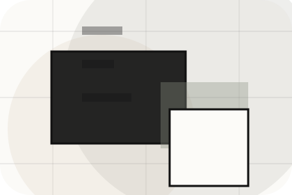
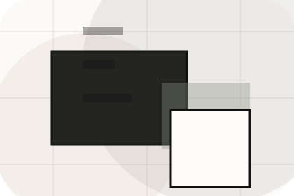
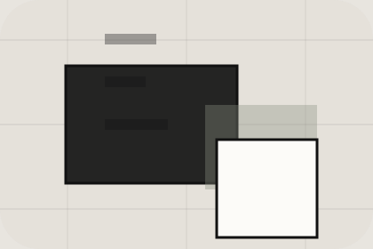

Best Fit
Who should use lettings and when it belongs in the services journey.
Services / 01
Services opens as a clear real estate decision hub: what Urban offers, who it helps, why it matters, and which route to take first.
The first screen combines positioning, proof, primary action, and fast internal navigation, so people can act immediately or compare the rest of the services route with context.
Architectural listing hero
Select the closest route and Urban keeps the next step, proof, and follow-up expectation aligned with market confidence and discovery.

Services / 02
Sales explains the practical scope, best-fit situations, and expected outcome so real estate visitors can compare options without decoding jargon.
The section keeps the offer concrete: what is included, who it is best for, what decision it supports, and which linked route gives the deeper detail.
Explore ServicesUrban structures sales around best fit, what changes, and a clear next route so visitors can compare the block quickly before they get a valuation.
Get ValuationServices / 04
Management explains the practical scope, best-fit situations, and expected outcome so real estate visitors can compare options without decoding jargon.
The section keeps the offer concrete: what is included, who it is best for, what decision it supports, and which linked route gives the deeper detail.
Explore ServicesWho should use management and when it belongs in the services journey.
The practical benefit visitors should expect after choosing this route.

Where to compare details, pricing, support, or contact options before committing.
Services / 05
Valuation explains the practical scope, best-fit situations, and expected outcome so real estate visitors can compare options without decoding jargon.
The section keeps the offer concrete: what is included, who it is best for, what decision it supports, and which linked route gives the deeper detail.
Explore ServicesWho should use valuation and when it belongs in the services journey.
The practical benefit visitors should expect after choosing this route.
Where to compare details, pricing, support, or contact options before committing.
Services / 06
Land explains the practical scope, best-fit situations, and expected outcome so real estate visitors can compare options without decoding jargon.
The section keeps the offer concrete: what is included, who it is best for, what decision it supports, and which linked route gives the deeper detail.
Explore ServicesWho should use land and when it belongs in the services journey.
The practical benefit visitors should expect after choosing this route.
Where to compare details, pricing, support, or contact options before committing.
Services / 07
Investment explains the practical scope, best-fit situations, and expected outcome so real estate visitors can compare options without decoding jargon.
The section keeps the offer concrete: what is included, who it is best for, what decision it supports, and which linked route gives the deeper detail.
Explore ServicesUrban structures investment around best fit, what changes, and a clear next route so visitors can compare the block quickly before they get a valuation.
Get ValuationServices / 08
Benefits defines the better state Urban is built to create, with enough detail to make the promise believable.
A real-estate editorial site with architecture-led listings, sparse navigation, area guides, and valuation flow. The section grounds that direction in concrete benefits, visible tradeoffs, and a next route visitors can use when the promise feels relevant.
Explore Services
Benefits defines what becomes clearer, easier, or safer when Urban is the chosen route.
Services / 09
Scope explains the practical scope, best-fit situations, and expected outcome so real estate visitors can compare options without decoding jargon.
The section keeps the offer concrete: what is included, who it is best for, what decision it supports, and which linked route gives the deeper detail.
Explore ServicesWho should use scope and when it belongs in the services journey.

The practical benefit visitors should expect after choosing this route.

Where to compare details, pricing, support, or contact options before committing.
Services / 10
Urban closes the services route with a clear action, a quick reminder of the value, and a low-friction way to get a valuation.
Visitors who are ready can use the primary action. Visitors who are still comparing can scan the section links, proof, and support routes before they get a valuation.
Get ValuationThe final block keeps the choice simple: act now, compare one more proof route, or send enough detail for a focused response.
Get Valuationmarket confidence and discovery
A real-estate editorial site with architecture-led listings, sparse navigation, area guides, and valuation flow. Services ends with a direct path to get a valuation, plus enough context for visitors who still need to compare.

Get ValuationInformation is provided for planning and should be reviewed for the final client, location, and operating rules.